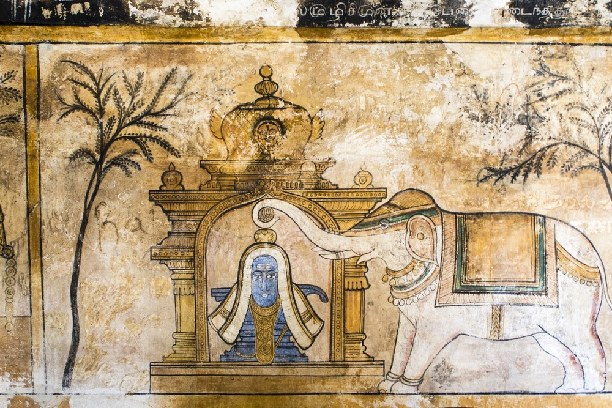
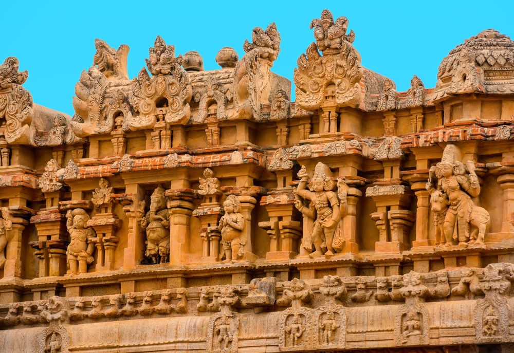

Exotic South India
- CHENNAI• MAMALLAPURAM• PONDICHERRY• THANJAVUR• CHETTINAD• THEKKADY• KUMARAKOM• KOCHI• MARARI BEACH
We support Responsible Tourism…
Responsible Tourism is about “making better places for people to live in and better places for people to visit.” Responsible Tourism requires that operators, hoteliers, governments, local people and tourists take responsibility, take action to make tourism more sustainable.
- minimises negative economic, environmental and social impacts;
- generates greater economic benefits for local people and enhances the well-being of host communities, improves working conditions and access to the industry;
- involves local people in decisions that affect their lives and life changes;
- makes positive contributions to the conservation of natural and cultural heritage, to the maintenance of the world’s diversity;
- provides more enjoyable experiences for tourists through more meaningful connections with local people, and a greater understanding of local cultural, social and environmental issues;
- provide access for people with disabilities and the disadvantaged;
- is culturally sensitive, engenders respect between tourists and hosts.
Doorways to Nature, Community & Ecology
At CGH Earth, nature and the environment take centre stage. Every experience is inspired by and built around this core, be it the forests at Spice Village or the fishing villages of Marari Beach. The structures become part of the landscape, using natural as well as modern materials to blend in. Modern day life fades into the background, allowing one to experience nature in its most pristine form. Every CGH hotel is its own unique experience, allowing nature herself to replenish its guests.
Experiences of Community

The chain borrowed the recipes of the local communities using locally grown ingredients and refined them, helping the guests experience the joys of tasty, wholesome food that is unique to the region. In return, the resorts have endeavored to employ people from the local community, be it the naturalist who guides through the wilderness or the therapist who rejuvenates the guest mind and body. The chain instituted community based programmes that helped rehabilitate poachers and smugglers. Local tribes were taught organic farming techniques, which helped them to prosper and preserve their way of life.
Experiences of Heritage

All CGH hotels have adopted the local culture and way of life. Paying homage to traditional modes of living. The transplanted Kerala tharavads at Coconut Lagoon were restored by hand, in a process that took years, bringing to life Kerala's gracious mansions of old. At Brunton Boatyard one will experience the varied and rich histories of Fort Kochi in every aspect, from the interiors of the hotel to the cuisine. And Visalam is a celebration of the noble land of Chettinad. Heritage, CGH believes, is the ground beneath their feet, giving them roots in a changing world
Program highlights from
- Assistance by our representatives.
- Visit to Kalakshetra Foundation at Mamallapuram.
- Rickshaw ride experience at Pondicherry.
- Visit the famous 9th century Shiva Temple at Chidambaram.
- Visit to Swamimalai & an atelier where artists craft the Veena in Thanjavur.
- Village walks with visit to local markets in Chettinad.
- Visit Meenakshi Temple and flower market in Madurai.
- Mannan Tribal Village visit from Thekkady.
- Muziris Tour with focus on religion in Kochi.
Day 01: ARRIVE IN CHENNAI - MAMALLAPURAM
Arrive at Chennai International airport. (Flight details to be advised.)
Meet & Assist: Our representative meets you at the arrival hall of airport, holding a signage of and escort you to your hotel in Mamallapuram using an air-conditioned vehicle. En-route visit Kalakshetra Foundation.
Kalakshetra: A vital centre of training and performance, the institution has produced and molded generations of acclaimed artists in a distinctive style. Since its establishment in the early 20th century, Kalakshetra has had stalwart musicians and dancers on its faculty. It provides a holistic education in arts amidst a serene and inspiring natural environment cultivating a spirit of reverence. The faculty comprises of many experts who have studied here and cherish the ideals of this institution. Some of India's most revered artistes are among its alumni
Arrive in Mahabalipuram & check-in at hotel for 2 nights stay.
Meals included: None
Overnight: Radisson Temple Bay
Day 02: MAMALLAPURAM
Breakfast at hotel.
After breakfast, excursion to Kanchipuram (60kms/ approx.1 hour).
Kanchipuram - known as the Golden City of a Thousand Temples, it is one of the oldest towns in India. It is famous for both its temples and its hand-woven silks. Most of the temples are well preserved till date, which were built during 7th and 8th century AD. The prominent temples of Kanchipuram are Ekambareshwar Temple, Kamakshi Temple etc. Also visit the local homes of the weavers and watch them create magic out of silk thread into saris. Kanchipuram silk is famous all over the world.
Arjuna's penance here is the world's largest bas relief measuring 27 meters by 9 meters. End the tour with a visit to the Shore temple which is the spectacular two-spired shrine that houses both Vishnu and Shiva in its sanctum. A very unique site!
Return to hotel after above visits.
Meals included: Breakfast
Overnight: Radisson Temple Bay
Day 03: MAMALLAPURAM - PONDICHERRY
Breakfast at hotel.
Later drive along the coast to Pondicherry covering a distance of 120kms in approx. 2 ½ hours. The former French Colony visiting Auroville on the way.
Pondicherry - The French ruled this territory for 300 years, and today, it stands as a living monument of the French culture in India. It was also the site of many a battle between the British and the French, and was the capital of French India, before it attained its independence. This restored, attractive, former French colony exudes a Mediterranean aura with its chic streets, elegant houses and ornamental gardens. Being a small and quiet enclave of Tamil Nadu, it has imbibed the Tamilian culture.
Auroville or the ‘City of Dawn’ which was conceived as a place of research into the ideal of human unity by the Mother, the spiritual collaborator of Sri Aurobindo.
Arrive Pondicherry; check in at the hotel for overnight stay.
Later visit to Aurobindo Ashram. Although the Ashram is secluded from the world it forms a vibrant centre of life in a modern urban setting. Continue to the Church of the Sacred Heart of Jesus, noted for its Gothic architecture and stained glass panels which depict the entire life of Jesus Christ.
Return to hotel after above visits.
Meals included: Breakfast
Overnight: CGH Earth, Maison Perumal
Day 04: PONDICHERRY – THANJAVUR
Breakfast at hotel.
This morning drive to Tanjore covering a distance of 185 kms in approx. 4 hours & 30 minutes. En route visit the 9th century Shiva Temple at Chidambaram. The ancient temple is dedicated to Lord Shiva in his form of the cosmic Dancer. It is said to be the birthplace of Shiva as the dancer (Nataraja) and therefore one of the most important temples in India. The place where the temple is located is the center point of world’s magnetic equator and thus considered to be the center of the world. It is a great experience to witness one of the many rituals held daily in the temple.

Later visit to temples of Gangaikondacholapuram which is architectural work of genius. In the early 11th century, the temple got built by Rajendra Chola, who was the son and successor of Rajaraja Chola. According to legends, King Rajendra Chola on one of his expeditions, brought the water from the Ganges in a golden pot and consecrated the reservoir 'Ponneri or Cholaganga'. That’s the reason behind the name "Ganagai kondan" meaning te one who brought the Ganges. The temple was erected to extol the accomplishments of a combatant king. Gangaikondacholapuram is a tribute to the architects and artisans, who created this spectacular testament.
Proceed to Darasuram Temple. The temple is dedicated to Shiva is here known as Airavateshvara, because he was worshipped at this temple by Airavata, the white elephant of the king of the gods, Indra. Legend has it that Airavata, while suffering from a change of colour curse from Sage Durvasa, had its colours restored by bathing in the sacred waters of this temple.
Lunch at Kumbakonam.
Later drive to Swamimalai to visit the Poompuhar Art Metal Training Centre to see the making of bronze Icons in the art of “lost form”. In this art form every icon is crafted first by wax, then covered with mud and clay, then heated in a furnace and finally the molten wax is replaced by bronze, making each icon a unique form of art.
Arrive in Thanjavur and check into the hotel for 2 nights stay.
Meals included: Breakfast
Overnight: Svatma
Day 05: THANJAVUR
Early morning, short Vedanta discourse session at the hotel.
Breakfast at the hotel.
Thanjavur - Located on the eastern coast of central Tamil Nadu, Tanjore has the distinction of having been the Capital of the Cholas, one of the greatest dynasties of the South. Tanjore bears witness to this, being dotted with no fewer than 74 temples - the most famous of which is the Brihadeshwara temple, a world heritage monument.

Morning visit to the world famous Brihadeshwar Temple.The Brihadeshwar Temple, dedicated to Lord Shiva, was built by King Rajaraja I in the 11th century. This architectural masterpiece has been designated as UNESCO World Heritage Site.
Later in the afternoon visit an atelier where artists craft the Veena, one of the oldest music instruments of South India used in their classical music.
Return to hotel after above visits.
In the evening, enjoy culinary vegetarian training at Aaharam restaurant. The culinary expertise of home style pure vegetarian cooking is brought to the guest as an art form. The restaurant Aharam is an all-day fine food restaurant with a traditional display kitchen that overlooks the pool. It has a unique menu - an exploration of Tamil cuisine available a la carte in an exclusive bouquet of plated mini meals. Ideal for health conscious foodies wanting to explore the flavours of the region, the ingredients are organic and carefully prepared by trained specialist chefs.
Meals included: Breakfast
Overnight: Svatma
Day 06: CHETTINAD
Breakfast at hotel.
This morning drive to Chettinad covering a distance of 90 kms in approx. 2 hours.
Chettinad is a wonderful small town which has the remnants of its glorious past. Chettinad is famous for its houses and buildings. A tour to Chettinad will be an extremely enriching experience for the tourist as the place is full with rich cultural heritage, exotic food and remarkable specimens of Dravidian architecture. Chettinad is well known for its mansions, temples and culinary delicacies
Visit the famous Chettinad Palace which is one of the most glorious examples of Chettinad's widely famed palatial mansions. You might come across others hugging the palace’s walls or so it would seem. While the palace can evoke such strong feelings, it's actually people feeling the smooth-as-a-fluffy-pillow plaster of the walls for which they are widely famed. Evidently, the Chettiyars would rub eggs and lime on them to get its smooth-as-butter finish.
In the afternoon one could enjoy strolling through the local weekly markets followed by a village walk. Chettinad is village life pure. The absence of trucks, buses and heavy traffic turns this place into a slow and laid back village, where you can interact with locals, take a ride with a cycle or just simply stroll the little markets. Also visit the “Vaara Sabdhai”, the weekly market. The weekly markets are unspoiled and a great treat to visit. Vegetable- and fruit vendors display their wares under colorful canopies, bantering with customers and tourists alike. There is also a fish market and a section for household and farm utensils. The market is setup on a temporary base to be moved to the next place for the next day. After the market, stop for a traditional cup of tea before visiting some of the great mansions of the area.
Return back to hotel after above visits.
Meals included: Breakfast
Overnight: CGH Earth Visalam
Day 07: CHETTINAD – MADURAI
Breakfast at the hotel.
This morning drive from Chettinadu to Madurai covering a distance of 90 kms in approx. 2 hours visiting the famous Ayyanar Temple on the way.
The Ayyanar temple (horse temple) is a place where rows of grinning and colorful terra cotta horses greet you once you enter the temple complex. Ayyanar is an ancient and regional expression of the Hindu God Shiva, the protector of all things. The horses are offerings from villages, or individuals to thank for a good harvest, the opening of shop, or any other festive occasion in their lives.
Arrive Madurai and check in to the hotel for 2 nights.
Enjoy a sightseeing tour of Madurai city. Visit the beautiful Meenakshi Temple. Its enormous domes covered with gaily-colored statues dominate the landscape and are visible from all over Madurai. This temple is dedicated to Lord Siva and Goddess Meenakshi. Meenakshi, is known as the fish-eyed goddess and has her temple to the south and Sundareswarar, (Shiva) has its temple to the west.
Continue to visit the Palace of Tirumalai Nayak, an Indo-Saracenic building constructed in 1523.
Meals included: Breakfast
Overnight: GRT Regency
Day 08: MADURAI
Early morning visit to the famous Madurai flower market.
For the jasmine and the rose, the Madurai flower market has also received an international recognition as both of these flowers are extensively used in the fragrance industry. The fashion house of Dior visits the Madurai Flower Market each year just to get motivated. It also uses these fragrances in its perfume creations.
Later return to the hotel for breakfast.
Time at leisure to explore the local market on your own.
Late afternoon, proceed for a walking tour through the ancient city of Madurai, and chance upon her stories; of fickle kings and towering monuments; of whimsical Gods and extraordinary mortals; some set a millennia ago and some of a more recent vintage. The tour is mostly done by foot; rickshaws are used on short stretches.
Return to the hotel after above visits.
Meals included: Breakfast
Overnight: GRT Regency
Day 09: MADURAI - THEKKADY
Breakfast at the hotel.
This morning drive from Madurai to Thekkady covering a distance of 150 kms. in approx. 3.5 hours.
Thekkady: In 1895 the Periyar River converted into the first sanctuary of Kerala known as the Periyar Wildlife Sanctuary which was redirected into the huge 55sq km. This sanctuary in Kerala was built in 1934 by the old Travancore State Government. This construction is a rare example of human meddling enhancing since there was no damaging in ecosystem that had happened. This sanctuary is largely known for its large herds of tusk-less elephants and Project Tiger as well. Wildlife included in this region are the 246 species of birds and 112 of butterflies. Animals in their natural habitat can be noticed while a morning or early evening boat ride and whilst cruising on the mist-shrouded lake you are likely to see wild boar, Sambhar deer, wild dogs, Langur monkeys and herds of elephants.
Late afternoon enjoy an interesting walk inside the Periyar National Park with your naturalist. The fascinating Periyar Wildlife Sanctuary attracts thousands of birds, and is home to elephants, sambar and bison followed by a boat ride at Lake Periyar.
Return to hotel after above visits.
Meals included: Breakfast
Overnight: CGH Earth, Spice Village
Day 10: THEKKADY
Breakfast at the hotel.
Spend your day with Mannans” The Real tribes” of Kovilama Kingdom:
The program starts at 0800hrs. Drive in jeeps along the hilly plantations of kumily village. During this drive we explore the big plantations of coffee, cardamom and pepper on the sides of estate roads in cardamom Hill Reserve. As we leave the spice plantations behind we head into open tea plantations. A scenic drive through these lush green plantations will lead us to our first refreshing spot The Chenkara Kurisumala.
Chenkara Kurisumala View Point
Chenkara - 15km from famous Thekkady Tiger reserve and wild life sanctuary. It is with a beautiful landscape surrounded by eight mountains.
Ayyappancovil
Ayyappancoil is small village which is just 30km far from Kumily. Ayyappancoil was a big township in early 1960s. During the construction of Idukki hydro-electric project, the township was evacuated by the Kerala government.
Kovilamala Tribal Village
Kozhimala or Kovilmala is a beautiful village area near the Idukki hydroelectric project's water reservoir. Kovilamala is inhabited by the tribal community Mannan. The Mannan community has unique culture and rituals.
After a small lunch in their King’s house we drive from this colony to a nearby spot known as Anchuruli.
Anchuruli
It is a tourist spot located 10km from Kovilmala settlement and is a catchment area of Idukki Arch Dam, providing a bewitching and awesome view of nature. Anjuruli is famous for the waterfall which can be reached with the help of the local people.
Before Anchuruli, after a 2km drive from kovilamala we reach the famous “Honey Nagar” in Murikkattukudi where we can meet Mr. Raju who is famous for his honey bee keeping and Api-Therapy method. Here we can spend a little time with him getting information regarding the tiny but important honey bees and their role in curing arthritic problems etc. We even will get chance to taste and buy the natural honey and honey products from his farm.
After visiting this beautiful place we can drive back again to the Kovilamala settlement for witnessing a tribal art performance known as “KOOTHU” by the mannan people. A chance to get familiar with the artistic skill of the tribes..
Meals included: Breakfast & Lunch
Overnight: CGH Earth, Spice Village
Day 11: THEKKADY – KUMARAKOM
Breakfast at hotel.
Leave for Kumarakom by surface covering a distance of 140 kms in approx. 3 ½ hours.
Kumarakom - The enchanting backwater destination, Kumarakom is located on the picturesque Vembanad Lake. The village of Kumarakom is a cluster of little islands that have been converted into a number of tourist resorts. Kumarakom is an unbelievable beautiful paradise. The blue backwaters and the surface of Vembanad Lake reflect the azure sky. The amazing shades of green of the vegetation that include mangroves, coconut palms, and paddy fields cover the verdant countryside
Arrive Kumarakom and check in to the hotel for 2 nights.

Meals included: Breakfast
Overnight: Coconut Lagoon
Day 12: KUMARAKOM
Breakfast at hotel.
The backwaters represent a unique geological formation and are the basis of a distinct lifestyle. Tranquil and alluring, they offer you the experience of a lifetime. Traveling through the backwaters of Kerala is a marvelous experience with the simple, unique pleasures it offers.
Kettuvalom's of Kerala are giant country crafts that were used in the early days to transport goods from the isolated interior villages to the towns. Now converted to beautiful dwellings, they are accommodated with fully furnished bedrooms with attached bathrooms, sundeck, open lounge, kitchenette and a crew comprising of a chef, guide and oarsmen.
Rest of the day at leisure for independence activities at hotel.
Meals included: Breakfast & Lunch.
Overnight at the Hotel – Coconut Lagoon
Day 13: KUMARAKOM – KOCHI
Breakfast at hotel.
Later drive to Kochi (covering a distance of 60 kms. in approx. 1½ hour).
Kochi- commercial capital of Kerala and the most cosmopolitan of the state’s cities, Cochin or Kochi have long been eulogized in tourist literature as the ‘Queen of the Arabian Sea.’ Strategically located on the east - west sea route, Cochin is Kerala’s major port, boasting of one of the finest natural harbors in the world.
Arrive in Kochi and check-in to hotel for overnight stay.
Later proceed for a Muziris Tour - Tracing the footsteps of Religion
This tour offers an introduction to the many faiths and cultures of the Malabar Coast.
Muziris is the name of an ancient port city on the Kerala coast, an hour’s drive north of Cochin. The city traded in spices, silk, and precious stones; with exports to Rome, Greece, Egypt, etc. Enriched by trade contacts, Muziris became a melting pot of world cultures. The earliest Jewish settlers in India landed on the Malabar Coast and flourished in Muziris. Muziris is where St. Thomas the Apostle is said to have first landed in 52AD, bringing Christianity to India. The first ever mosque in India was also built here.
After nearly 1000 years of thriving trade, the port of Muziris was damaged in a major flood, and Cochin took its place as the most important trading port in Kerala. However, the Muziris area – covering Kodungallur and Paravoor – continues to be as multi-cultural as ever. Old churches, synagogues, mosques and temples attest to the great confluence of cultures that Muziris was. In a world full of strife, the monuments and bazaars of Muziris stand as beacons even today, a testament to the harmonious co-existence of multiple faiths on the Malabar Coast.
Tour Coverage: On this tour, we will visit the following: • Kodungalloor Bhagavathi Temple: A Hindu temple to Goddess Bhadrakali in existence since ancient times and rebuilt over the years. Steeped in powerful myths and legends, the temple attracts many locals and pilgrims for its daily worship, rituals and festivals. • Chennamangalam and Paravoor Synagogues: Old synagogues of the Malabar Jews, constructed using Keralan building traditions, but adapted to suit Jewish ritual and liturgical requirements. Near the Chennamangalam synagogue is also the first Christian Seminary and the first printing press in India. • Kottakavu Church: A church of the Syrian Christian community of Kerala, believed to be the one of the seven original ones established by the Apostle St. Thomas • Paliam Dutch Palace (Museum): The residence of the Paliath Achans, the prime ministers to the Rajas of the State of Kochi. • Cheraman Juma Masjid: The first mosque in India, built after the Chera king of Kerala met the Prophet Muhammad. It has been renovated several times since then. • Local bazaar: We will also walk through an interesting and colourful local bazaar, selling everything under the sun
Those who are interested can also visit the excavation site at Pattanam. This is a small archaeological site which contains some artifacts which were traded between Muziris and the rest of the world.
Duration: All days of the week except Mondays.
Note: • Please dress conservatively as we will be visiting religious monuments. • This tour is led by a trained knowledgeable guide who is familiar with the history of the Malabar Coast and its communities. It runs only in English. Prior reservation is required to ensure tour availability.
Meals included: Breakfast
Overnight: Brunton Boatyard
Day 14: KOCHI – MARARI BEACH
Morning tour of Kochi - the oldest European settlement in India, with an amazing blend of architectural styles. Visit the old Jewish quarter built with a synagogue (Closed on Friday and Saturday), the Dutch-built Mattancherry Palace (Closed on Friday).
Continue through the small streets of Mattancherry, and arrive at the Fruit market on Palace road where locals get their daily fresh veggies and fruits. Stop at the Dhobi Khana (laundry station), once throbbing with activity, it is now a picture of slow extinction.
Later transfer to Marari covering a distance of 60 km in approximately 1.5 hours.
Arrive in Marari and check-in to hotel for 2 nights stay.
Meals included: Breakfast
Overnight: Marari Beach Resort
Day 15: MARARI BEACH
Breakfast at the hotel.
Rest of the day to enjoy the hotel facilities.
Meals included: Breakfast
Overnight: Marari Beach Resort
Day 16: MARARI BEACH – KOCHI DEPART
Breakfast at the hotel.
Later in time to the transfer to the Kochi airport to take the flight back home.
****End of Tour****
Leave a Reply